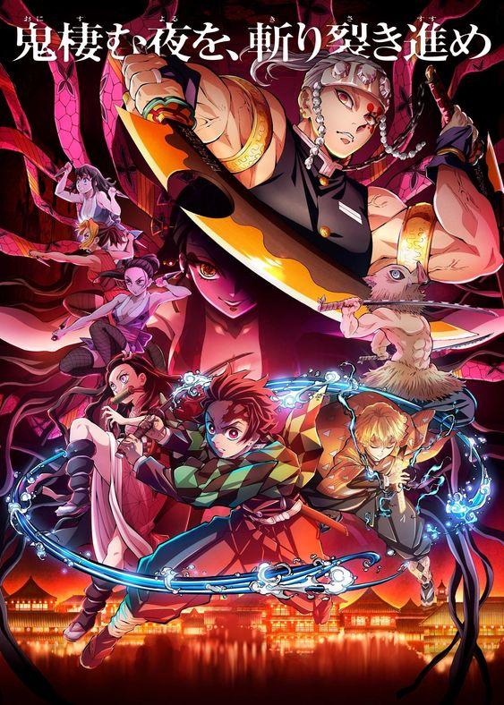

Demon Slayer
Personal appreciation

Demon Slayer was really life changing in my anime journey. The animations and art style was very different from what I had watched up till then. It was my third anime (after Naruto and Haikyu). The plot was very different too, especially after Haikyu. I really love it and a lot of its characters. My favourite is Giyu :). My favourite arc is probably the Entertainment District Arc with Uzui (another fav). The Mungen Train Arc is a very close second though, I was devasted with Rengoku's death. He was a beautifully written and developped character. I would definitively recommand this anime to a starter of this genre, and many would agree with me since Demon Slayer's peak of popularity was in 2020, the year of COVID where everyone was confined and had time to discover new things, such as new genres maybe...
The arcs of the manga present in the anime are, in order, The Final Selection Arc, The Mungen Train Arc and The Entertainment Arc. The third season is actually coming out this year! The Swordsmith Village Arc will start to air in Canada March 3rd. The first episode will even be an hour long instead of the usual 22 minutes. This arc picks up directly after The Mungen Train Arc, whose movie became the highest-grossing japanese movie of all time after its release in 2020, which is very exciting, since that last arc was incredible. I am terribly excited for the continuation of this series. When I have the time, I will try to start the mangas as well, since these cover way more arcs than the anime right now. The manga has actually ended as of May 2020. It was serialized in Shueisha's shonen manga magazine Weekly Shonen Jump for 205 chapters collected in 23 tankobon volumes.
In Demon Slayer, the members of the Corps are classified into rankings. In order, starting from Mizunoto, we have: Mizunoe, Kanoto, Kanoe, Tsuchinoto, Tsuchinoe, Hinoto, Hinoe, Kinoto, Kinoe, and finally, the Hashiras. The names of the rankings come from the Heavenly Stems. Tanjiro, the main character of this series, is currently at the rank of Kanoe. Same as his two best friends, Zenitsu and Inosuke, who are by his side every step of the way through his journey in the Demon Slayer Corps. But their rank really does not translate their level of experience in my opinion, as they have fought demons of the Twelve Kizuki multiple times.
The Hashiras in Demon Slayer are very powerful warriors who are essential in the war between the Demon Slayer Corps and Muzan Kibutsuji and his demons. This revered title by which we call them comes from their rank, the highest one. I love what they represent in the anime, so I've decided to list them out in preference.
Hashiras in my order of preference
- Giyu Tomioka
- Tengen Uzui
- Kyojuro Rengoku
- Shinobu Kocho
- Gyomei Himejima
- Mitsuri Kanroji
- Muichiro Tokito
- Obanai Iguro
- Sanemi Shinazugawa